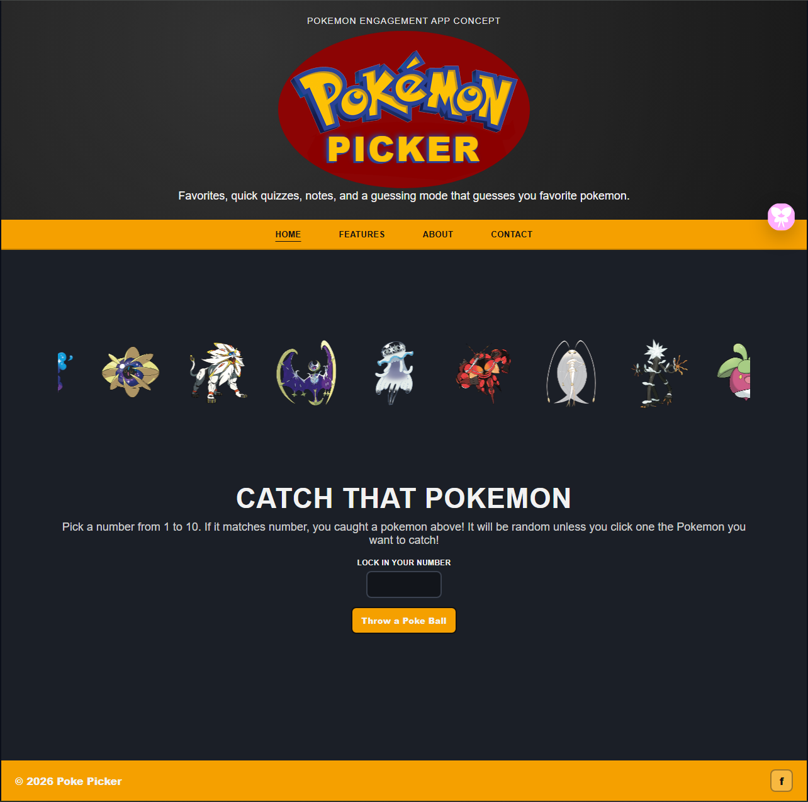
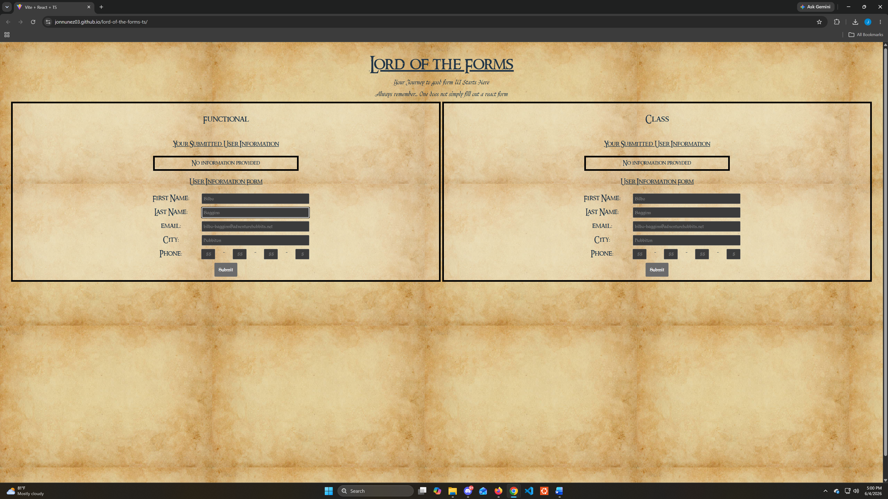

JavaScript / APIs / localStorage
StudyForge Study App
Interactive study app where users can search topics, generate quizzes, take quizzes, and review saved results.
View Case StudySoftware Engineering / Full Stack Web Development
I build practical, reliable, and user focused web applications using JavaScript, TypeScript, React, APIs, HTML, CSS, and SQL.
I am a Navy veteran completing my full stack web development degree at Arizona State University. My work focuses on building clean, organized, and useful web applications for real users.
Featured Work
These projects show my experience with API data, JavaScript logic, React, TypeScript, form validation, localStorage, and user focused interface design.
JavaScript / APIs / localStorage
Interactive study app where users can search topics, generate quizzes, take quizzes, and review saved results.
View Case Study
JavaScript / PokéAPI / Validation
Pokémon themed web app with a carousel, catching game, sprite display, light/dark mode, and form validation.
View Case Study
React / TypeScript / Forms
Themed form application with controlled inputs, validation rules, error messages, and submitted output display.
View Case Study